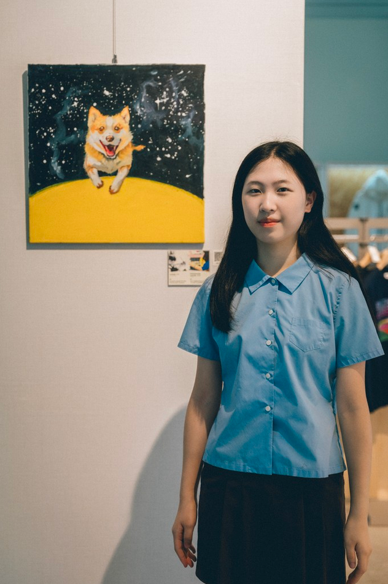
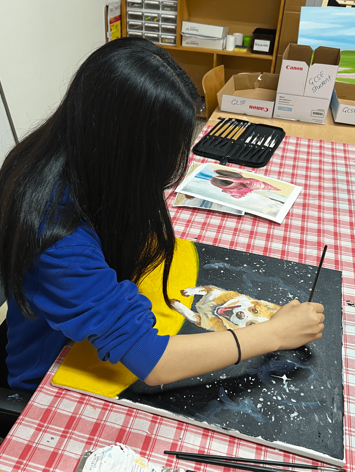
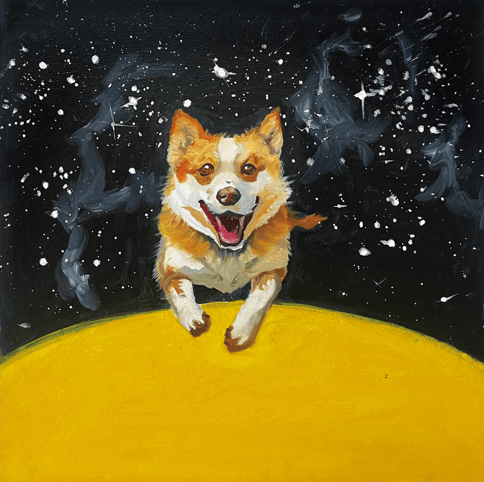

Spotlight: Minjae Kang

1. It’s been very hot recently. Do you have your own way to beat the heat?
To get through the heat, I drink iced beverages wherever I go in the summer and try to stay indoors as much as possible. When I’m on the move, I always use a handheld fan.
2. If there’s a place that has evoked special feelings for you as an artist, please tell us about it.
The seaside is special to me. Especially when I watch the sunset and listen to the sound of the waves, I feel calm.
3. Do you have any pets? If so, please introduce them; if not, tell us what animal you’d like to keep.
I currently keep about ten guppies. In the future, if possible, I’d like to have a cat.
4. What led you to participate in this exhibition?
Because I usually make art alone, I’d been wanting to try working with someone. I felt that creating art with another person opens up completely different possibilities that you can’t discover on your own. In particular, collaborating with people from diverse backgrounds lets you move in directions you hadn’t considered, which I saw as a major advantage.
5. What did you learn from working together?
Participating in the exhibition broadened my view of art. Receiving the artwork of a child on the autism spectrum first and then continuing with my own, I felt the power of building idea upon idea. The experience of working while respecting each other’s perspectives and expressions was very precious, and I think it ultimately led to a richer piece. I was especially inspired by my partner’s sense of color and composition.
6. What was the most memorable reaction from visitors?
The comment that “the two works seem to become a single story” left the strongest impression. Even though the pieces were created by different people, viewers felt a natural flow between them. That made me realize again that our process wasn’t just a formal exchange but true interaction. It was deeply rewarding to know that this process was woven into the work and communicated to the audience.
7. How do you feel about creating art together with people from diverse backgrounds, including autism?
I believe art is, at its core, an open conversation. If we stay within just one person’s perspective, it can be hard to create truly rich work, but collaborating with people from varied backgrounds can make it deeper and more multidimensional. This opportunity pushed me outside my usual frame, and with this exhibition as a starting point, I hope to keep making art together with people from even more diverse backgrounds.

1. 날씨가 많이 덥습니다. 더운 날씨를 이겨내는 나만의 방법이 있을까요?
더위를 이겨내기 위해 여름에는 어딜가나 아이스 음료를 마시고 최대한 실내에 있으려고 합니다. 이동 중에는 손 선풍기를 꼭 사용합니다.
2. 작가에게 특별한 감정을 느끼게 했던 장소가 있다면 소개해주세요.
저에게는 바닷가가 특별합니다. 특히 노을을 바라보면서 바다소리를 들으면 마음이 차분해지는 것 같습니다.
3. 애완동물을 키우고 있나요. 키우고 있다면 소개해 주시고, 아니라면 키우고 싶은 동물을 알려주세요.
현재는 구피 10마리 정도를 키우고 있습니다. 미래에는 가능하다면 고양이를 키워보고 싶습니다.
4. 이번 전시에 참여하게 된 계기
평소에 미술을 혼자하기 때문에 누군가와 함께 작업해보고 싶다는 생각을 가지고 있었습니다. 누군가와 같이 하는 예술은 혼자할때는 찾아볼 수 없는, 전혀 다른 가능성을 열어준다고 느꼈습니다. 특히 다양한 배경을 가진 사람과 협업하면 내가 미처 생각하지 못한 방향으로 나아갈 수 있는 점이 큰 장점이라고 생각했습니다.
5. 함께 작업하면서 배운 것이 있다면?
전시에 참여하는 것은 예술에 대한 시각을 넓히는 계기였습니다. 자폐 아동의 작품을 먼저 받고 제 작업을 이어가는 과정에서 아이디어 위에 아이디어를 쌓아가는 것의 힘을 체감할 수 있었습니다. 서로의 시선과 표현을 존중하며 작업하는 경험이 매우 소중했고, 결과적으로 더욱 풍부한 작품으로 이어졌다고 생각합니다. 특히 제 파트너의 색감과 구성에서 많은 영감을 받았습니다.
6. 관람객들의 반응 중 가장 인상 깊었던 것은?
'두 작품이 하나의 스토리가 되는 것 같다' 라는 반응이 가장 기억에 남습니다. 각기 다른 사람이 그린 그림에도 불구하고 자연스럽게 이어지는 흐름을 느꼈다는 점에서 저희의 과정이 단순히 형식적 교류가 아니라 진정한 상호작용이었다는 것을 다시 한번 느끼게 되어 정말 좋았습니다. 그 과정이 작품 속에 녹아들어 관람객들에게도 전해졌다는 것이 매우 보람찼습니다.
7. 자폐를 포함한 다양한 배경을 가진 사람들과 예술을 함께 만드는 것에 대해 어떻게 느끼나요?
예술은 본질적으로 열려 있는 대화라고 생각합니다. 그렇기 때문에 한 사람의 관점에만 머무른다면 풍부한 작품을 만들기 어려울 수 있지만, 다양한 배경을 가진 사람들과 함께 작업하면 더 깊이 있고 입체적으로 바뀔 수 있습니다. 이번 기회는 저에게도 평소의 틀을 벗어나는 계기가 되었고, 이번 전시를 계기로 더욱 다양한 배경의 사람들과 예술을 함께 만들어가고 싶습니다.
